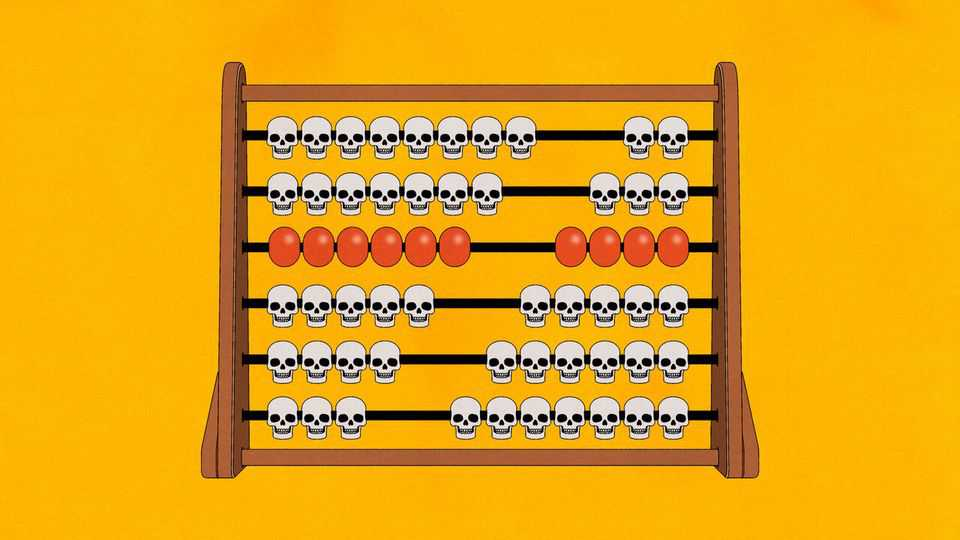

How many people are dying as a result of USAID’s demise?
Fewer than academics imagine, but more than Elon Musk will admit

Jul 30th 2026
Elon Musk is unrepentant. Starting in January 2025, in his brief stint as Donald Trump’s cost-slasher-in-chief, SpaceX’s boss helped the president dismantle the world’s biggest foreign-aid agency. Eighteen months on, he insists the end of USAID has not cost any human lives: “Zero point zero,” he says. Aid bureaucrats disagree. Bill Gates has accused Mr Musk of killing the world’s poorest children. Researchers started back-of-the-envelope calculations of the human cost of cuts soon after they began. The most influential, published in the Lancet in July 2025, estimates that by 2030 14m people will die as a result of USAID’s demise.
Neither a claim of zero nor one of so many millions survives a thorough interrogation. USAID once doled out $60bn, or roughly a quarter of foreign aid globally, paying for everything from HIV drugs and disaster relief to radio stations and justice think-tanks. The abruptness of its closure disrupted life-saving assistance. That has cost lives, and permanent cuts will cost more. But the biggest estimates of lives lost assume that Mr Trump planned to eliminate everything USAID once funded. In fact much was preserved, and is now distributed by different government bodies.
The stories are not always simple. A week after Mr Trump cut off all funding, he temporarily provided a waiver for “life-saving” services. But confusion over who qualified meant some services never restarted, while others were permanently cut loose in the following months.
Tread in one of the world’s poorest countries, and tragic consequences from the end of USAID will soon emerge. In Malawi, most maternity clinics stayed open, but the firm providing ambulances from remote villages did not. In March 2025 your columnist met the family of Prudence, who had died in her village two weeks before, aged 25, from complications in labour. Health workers said she was one of ten mothers who had died since January but would have got to a clinic had transport been available. In Somalia, where food shortages are spreading, a quarter of UNICEF clinics closed, owing in part to American cuts. They had mostly treated severely malnourished children. The number hospitalised doubled in 2025 to 768; some died. In all these cases, some would have perished even with treatment. But some would not have done.
How many? Policymakers cannot tot up all the cases like Prudence’s. And aid cuts also reduced funding for health surveys, complicating efforts to quantify the consequences of USAID’s closure. Estimates of deaths are the product of higher-level and less reliable methods. The paper in the Lancet, by Daniella Medeiros Cavalcanti and Lucas de Oliveira Ferreira de Sales, of the Federal University of Bahia in Brazil, and others, compared the decline in mortality rates of countries with different levels of USAID funding per person between 2001 and 2021. They found that the more money a country received, on average, the more its mortality declined.
But it is also well known that the poorest countries, which got the most aid, saw the biggest decline in mortality. The authors controlled for GDP per person. Yet that alone does not isolate the effect of aid. There are alternative explanations for different rates of mortality decline—eg, aid bureaucrats tend to favour countries with the best health-care systems, which also reduce deaths. Nevertheless, the authors projected the relationship they found onto the next five years. Assuming, wrongly, that American aid would fall by 83% yielded their figure of 14m, including 4.5m children, compared with a scenario in which funding stayed at 2024 levels.
Other studies are also questionable. Researchers at Boston University estimated extra child deaths from malnutrition by dividing the $160m cost of USAID’s nutrition programme by the $150 cost of the food package a child is given when near death. That implies 1.1m lost packages. Without them 10-20% of children die, implying at least 168,000 lost lives. But little of the $160m would have gone on such aid. Most went to women and children in poor countries to prevent starvation rather than treat it. And in the end the programme was moved to another department and not cut.
Fundamentally, such estimates suffer from two problems. The first is that the drop in health funding has been less cataclysmic than many predicted. Since Mr Trump’s return, American aid has been cut by about a third, but the cuts have been heaviest in areas such as education and promoting democracy. Health and humanitarian funding, which save the most lives, have been less hard hit. In 2026 Mr Trump’s global health budget will be $10bn, only $2.4bn less than Joe Biden’s for 2025.
The second is that researchers assume that aid’s impact in future would be the same as in the past. Many economists, though, regard the early 21st century as an anomalous period of extraordinary gains that were slowing before aid cuts began. Most of the easy fixes, such as vaccines and malaria nets, are already in place. Childhood mortality in developing countries plummeted from 79 deaths per 1,000 births in 2000 to 42 by 2016. Yet by 2022 the figure had dropped only a little more, to 37. To assume that extra dollars today would have the same effect as 20 years ago is fanciful.
If many fewer people are dying than supposed, that does not vindicate Mr Musk. His notion of zero deaths is plainly wrong. Prudence’s story alone shows that. The human cost has been limited because the cuts were more modest than he planned. Mr Musk also claims that he was encouraging other organisations to step in. Poor countries’ governments may have, and all to the good if so. Rich countries’ governments have not. They have instead taken America’s withdrawal as their cue to do the same.
It is a grim fact that politics involves choices that cost lives. Fewer of them have been lost than feared. But it cannot be denied that lives have been lost all the same. ■